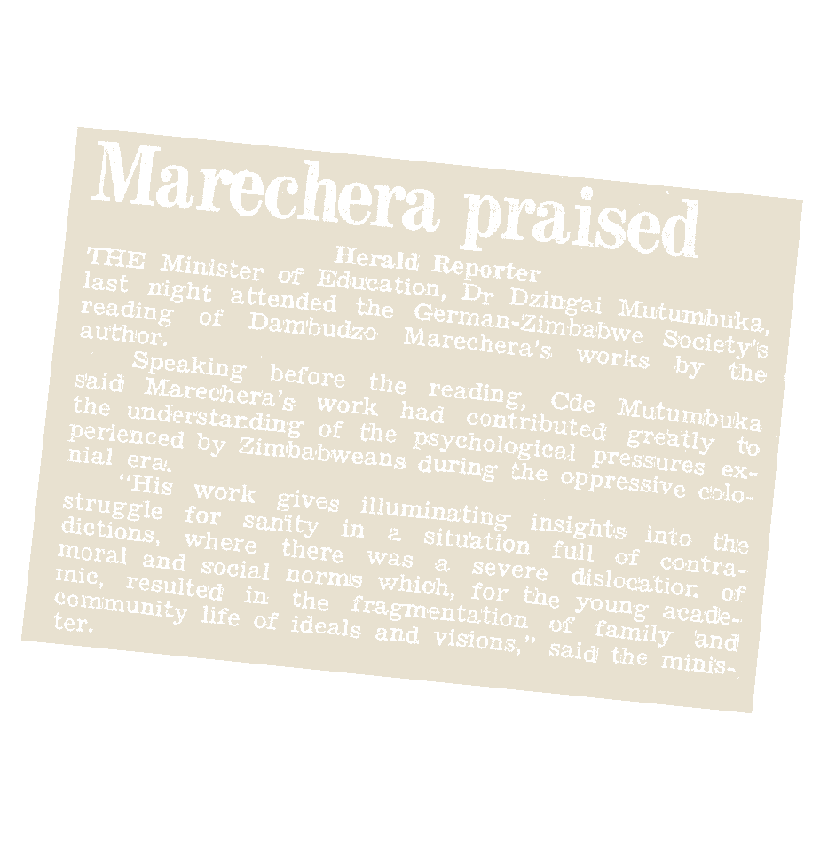

Please text me.

What do we talk about when we talk about Dambudzo Marechera?
A crowd-sourced biography
So enduring is Dambudzo Marechera’s reputation as the enfant terrible of African literature yet he is mostly misunderstood. If Marechera had not existed, Zimbabwe would have invented him. And to a degree we have. The person may have been real but the legend that is Dambudzo Marechera, who was part rebel, part iconoclast, is a mountain high papier mâché god we have all created. These constructions of Marechera we share among each other have been ignored in the prevailing scholarship of the author. This is a three-part project, which complicates Marechera’s biography as has been officially told through the DAMBUDZO MARECHERA: A Source Book of his Life and Work first published in 1992 in Harare.

Part 1:
Marechera as created by the press.
Part 2:
Marechera as remembered by young writers across Zimbabwe.

Part 3:
Marechera as everyone’s buddy.
Please text any anecdotes, voice notes, memes, photos or anything related to Marechera.
Curator and Editor
Dr. Tinashe Mushakavanhu
Site Design
Aidan Quinlan
Design Consultant
Nontsikelelo Mutiti